画面仕様・テスト条件・画面遷移図・Excel仕様書までワンクリック。ドキュメントのない現場でも、初日からテスト設計に入れます。
📱 本物のUIをスマホで実際に操作できます（同梱デモ DemoMart のサンプルデータで動作）。解析実行はサーバが必要なため、ここでは記録済みの実測データを再生します。録画ではありません。本物のWebSpec2DocのUIそのものを、同梱デモ DemoMart を解析した実測データ（サンプル値）で駆動します。URL入力 → 画面分析 → 条件設定 → 解析（ライブ進捗）→ レポート全タブまで、スマホからそのままクリック操作できます。
URL欄はデモ用に http://127.0.0.1:8766/ を入れて「解析を始める」。数秒で発見→解析→レポートまで進みます。
同梱デモサイト DemoMart を実際に解析したときの記録です。URL入力 → 画面分析 → 条件設定 → 解析 → レポート表示まで、ノーカットの実速度。
音声はありません。全画面表示でご覧いただくのがおすすめです。
画像はすべて実際のUIのスクリーンショットです。タップすると原寸で開きます。
ホーム画面のURL欄に対象システムのURLを入れるだけ。過去の解析履歴からの再クロールもできます。
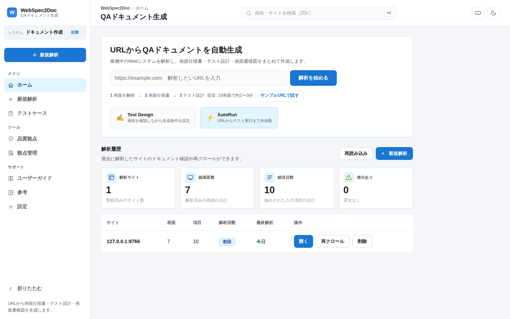
リンクをたどって画面を自動発見し、ライブフィードに逐次表示。ログインが必要な画面も検出します。
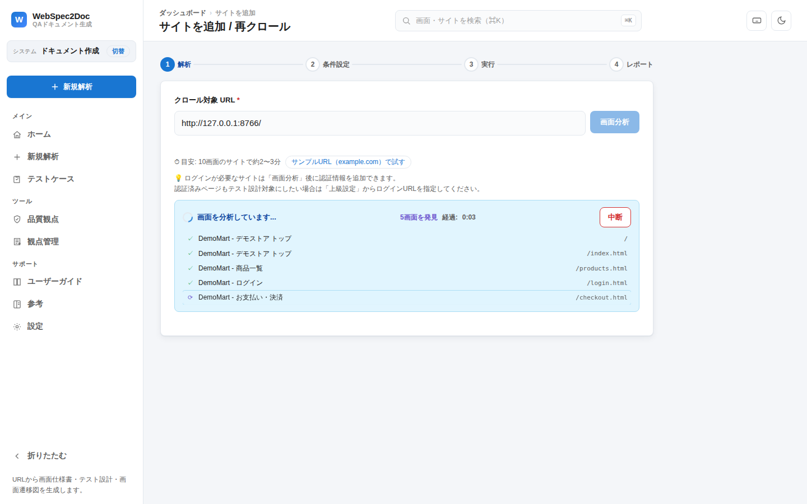
発見された画面から解析対象を選択。クロール深度・並列数・認証情報もここで設定できます。
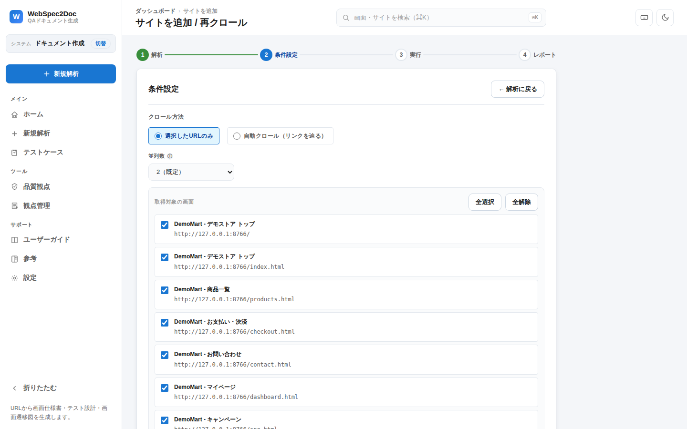
解析中の画面がリアルタイムで見えます。robots.txt の Crawl-Delay を尊重するなど、クロール礼儀は既定で有効。進捗・残り時間・ログも表示されます。
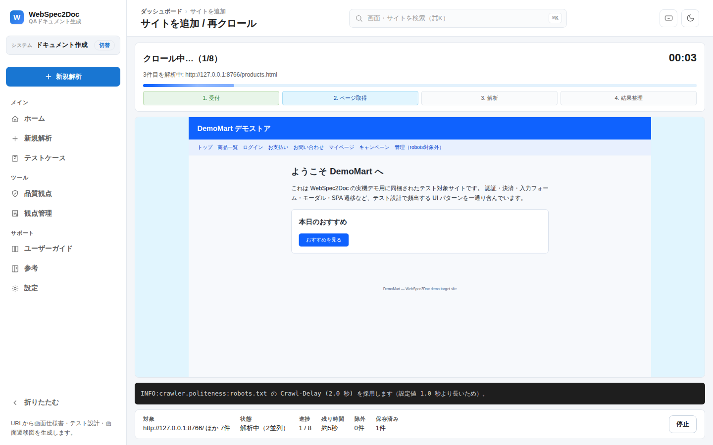
数分で画面仕様書・テスト設計・遷移図が揃います（10画面で約2〜3分が目安）。
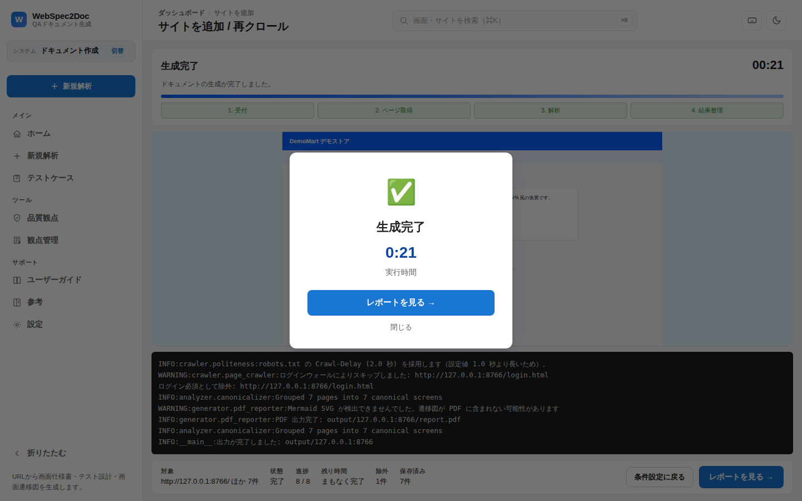
エグゼクティブサマリーからテスト設計技法の推奨まで。サンプルレポート本体はこちら（スマホでもそのまま読めます）。
画面数・入力項目・概算テストケース数を集計し、優先テスト対象をリスクスコア順に提案します。
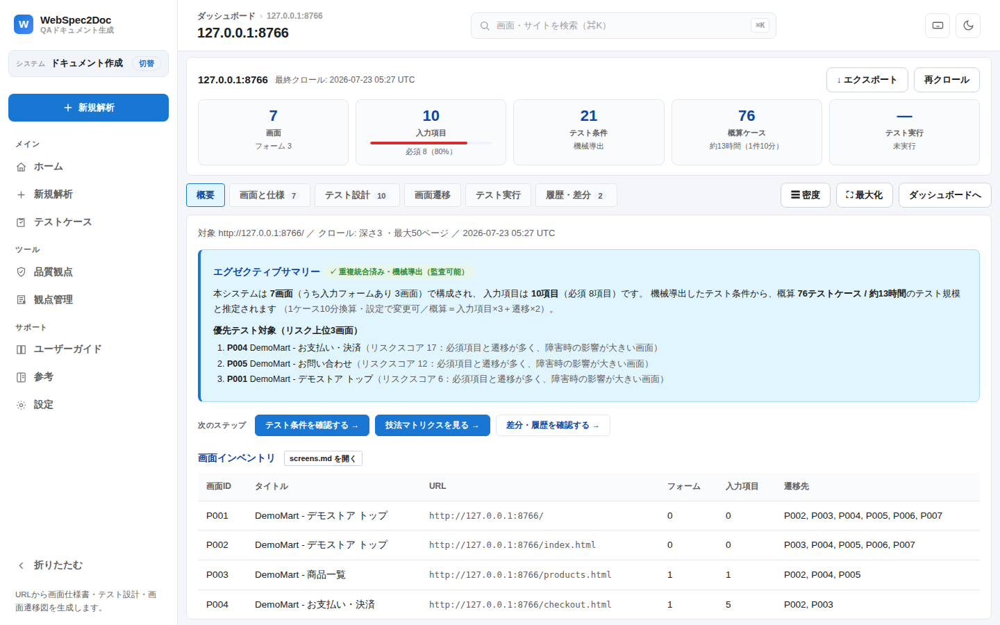
入力フィールド・制約・ロケータ候補を画面ごとに整理。根拠（実測セレクタ・スクショ座標）付きです。
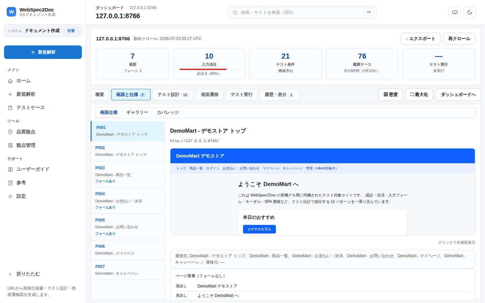
同値分割・境界値分析・デシジョンテーブル等を画面要素から自動判定し、テスト条件に展開します。
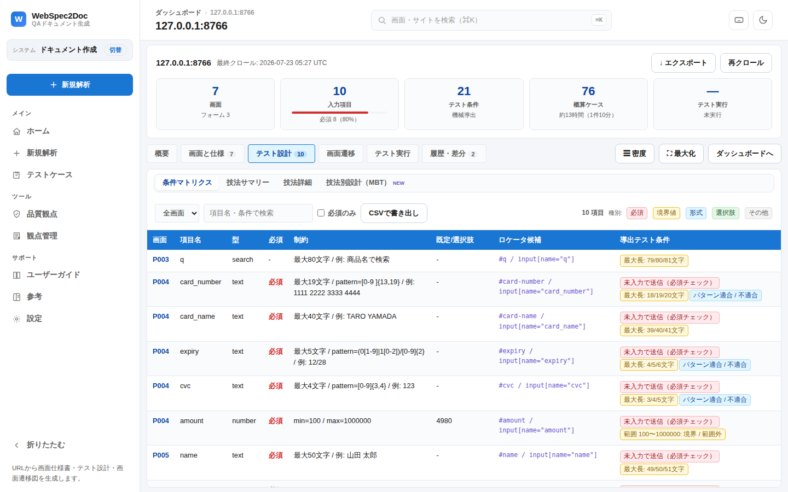
シーケンス図・アクティビティ図・テスト観点マップと、ISTQB標準の画面遷移表を自動生成。SVG/PNG/Mermaidでエクスポートできます。
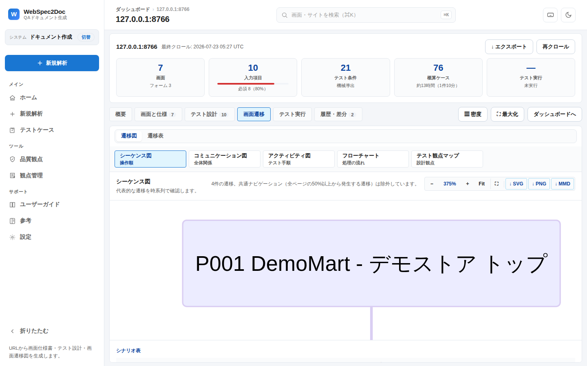
上のインタラクティブデモも、生成レポートも、このショーケースも、すべてスマホからそのまま操作・閲覧できます。
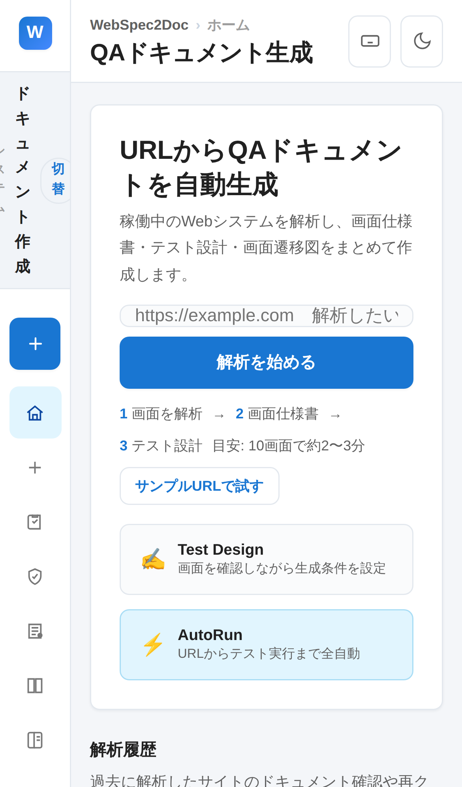
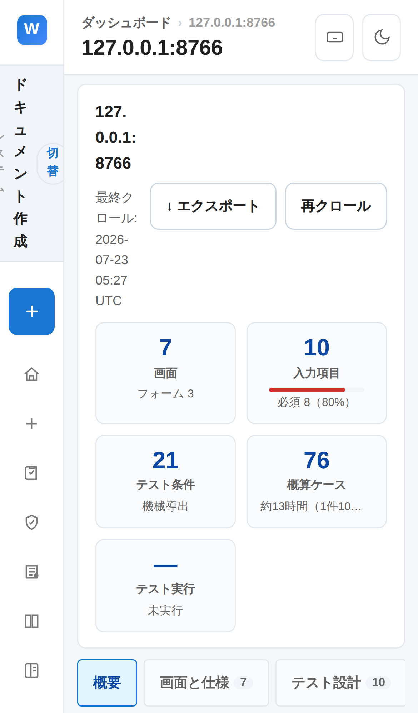
1回の解析で以下がまとめて生成されます。すべて実際の生成物です。
本体はローカルPC（またはサーバ）で動作します。外部ネットワークもAPIキーも不要で、同梱デモサイトを対象にすべての機能を試せます。
git clone https://github.com/ma-garin/WebSpec2Doc.git cd WebSpec2Doc python3.12 -m venv venv && source venv/bin/activate pip install -r requirements-dev.txt python scripts/manage_playwright_runtime.py install make demo # デモサイトと本体を同時起動
{kind=link}
{kind=link}
{kind=link}
{kind=link}
{kind=link}
{kind=link}
{kind=link}
{kind=link}
{kind=link}
{kind=link}
{kind=link}